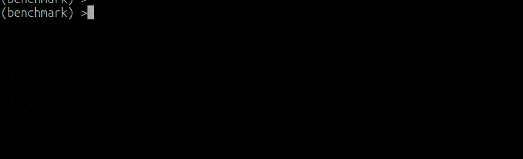

Benchmark utils
Utils for benchmark - wrapper over python timeit.


Tested on python 3.8 - 3.12
Install
Install from pypi:
pip install benchmark_utils
Or install from github repo:
pip install git+https://github.com/ayasyrev/benchmark_utils.git
Basic use.
Lets benchmark some (dummy) functions.
from time import sleep
def func_to_test_1(sleep_time: float = 0.1, mult: int = 1) -> None:
"""simple 'sleep' func for test"""
sleep(sleep_time * mult)
def func_to_test_2(sleep_time: float = 0.11, mult: int = 1) -> None:
"""simple 'sleep' func for test"""
sleep(sleep_time * mult)
Let's create benchmark.
from benchmark_utils import Benchmark
bench = Benchmark(
[func_to_test_1, func_to_test_2],
)
bench
output
Benchmark(func_to_test_1, func_to_test_2)
Now we can benchmark that functions.
# we can run bench.run() or just:
bench()
output
Func name | Sec / run
func_to_test_1: 0.10 0.0%
func_to_test_2: 0.11 -9.1%
We can run it again, all functions, some of it, exclude some and change number of repeats.
bench.run(num_repeats=10)
output
Func name | Sec / run
func_to_test_1: 0.10 0.0%
func_to_test_2: 0.11 -9.1%
After run, we can print results - sorted or not, reversed, compare results with best or not.
bench.print_results(reverse=True)
output
Func name | Sec / run
func_to_test_2: 0.11 0.0%
func_to_test_1: 0.10 10.0%
We can add functions to benchmark as list of functions (or partial) or as dictionary: {"name": function}.
bench = Benchmark(
[
func_to_test_1,
partial(func_to_test_1, 0.12),
partial(func_to_test_1, sleep_time=0.11),
]
)
bench
output
Benchmark(func_to_test_1, func_to_test_1(0.12), func_to_test_1(sleep_time=0.11))bench.run()
output
Func name | Sec / run
func_to_test_1: 0.10 0.0%
func_to_test_1(sleep_time=0.11): 0.11 -9.1%
func_to_test_1(0.12): 0.12 -16.7%
bench = Benchmark(
{
"func_1": func_to_test_1,
"func_2": func_to_test_2,
}
)
bench
output
Benchmark(func_1, func_2)
When we run benchmark script in terminal, we got pretty progress thanks to rich. Lets run example_1.py from example folder:

BenchmarkIter
With BenchmarkIter we can benchmark functions over iterables, for example read list of files or run functions with different arguments.
def func_to_test_1(x: int) -> None:
"""simple 'sleep' func for test"""
sleep(0.01)
def func_to_test_2(x: int) -> None:
"""simple 'sleep' func for test"""
sleep(0.015)
dummy_params = list(range(10))
from benchmark_utils import BenchmarkIter
bench = BenchmarkIter(
func=[func_to_test_1, func_to_test_2],
item_list=dummy_params,
)
bench()
output
Func name | Items/sec
func_to_test_1: 97.93
func_to_test_2: 65.25
We can run it again, all functions, some of it, exclude some and change number of repeats.
And we can limit number of items with num_samples argument:
bench.run(num_samples=5)
Multiprocessing
By default we tun functions in one thread.
But we can use multiprocessing with multiprocessing=True argument:
bench.run(multiprocessing=True)
It will use all available cpu cores.
And we can use num_workers argument to limit used cpu cores:
bench.run(multiprocessing=True, num_workers=2)
bench.run(multiprocessing=True, num_workers=2)
output
Func name | Items/sec
func_to_test_1: 173.20
func_to_test_2: 120.80